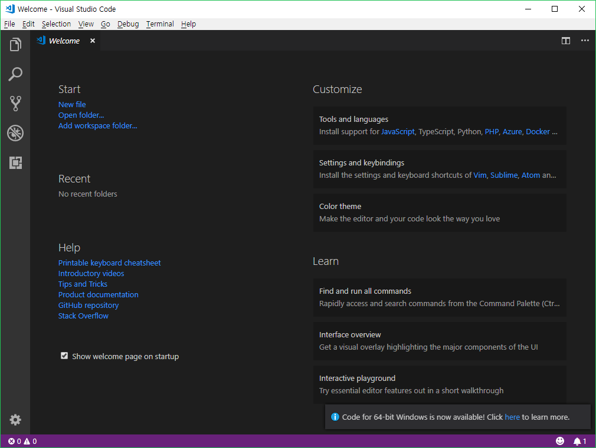
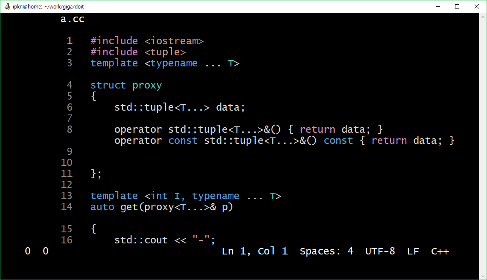

Giga Editor
VS Code running on terminal, or
terminal based text editor (can) consuming GBs of memory
VS Code running on terminal, or
terminal based text editor (can) consuming GBs of memory
지금까지
emacs나 vim을 익히는 것을 최대한 미뤄오셨나요?
또, 터미널에서 파일을 편집할 일을 최대한 피해오셨나요?
이제는 더이상 그럴 필요가 없습니다.
44% 이상의 JavaScript 개발자가 선택한 VS Code를,
바로 서버에 접속한 터미널 환경에서 사용할 수 있습니다!
이제 서버에서도 electron 기반 에디터를 사용하며 CPU와 메모리를 낭비합시다!
기가 에디터는 VS Code를 고쳐 터미널에서 실행할 수 있게 한 에디터입니다.
$ giga $ giga index.html코드와 마찬가지로 인자를 줘서 실행하여
VS Code는 electron을 이용하여 작성되어 있습니다.
electron은 웹 기술로 작성된 프로그램을 Chromium 렌더러 + V8 을 통해 데스크탑 프로그램으로 실행할 수 있게 해줍니다.
리눅스 상에서는 Xwindow를 통해서 이런 프로그램을 실행하여 사용할 수 있습니다.
Xvfb 라는 Xwindow가 있는데, 이걸 이용하면 리눅스 상의 GUI 프로그램을 headless로 실행할 수 있습니다. 화면에 그려지는 내용은 메모리 상으로만 저장하고, 실제로 보여주진 않습니다.
$ xvfb-run code위와 같은 명령으로 GUI 프로그램을 실행할 수 있습니다.
전체적인 과정을 정리하면 이렇겠군요.
대충 이리저리 복잡한 과정을 거친단 뜻입니다.
VS Code → electron → 폰트 강제 변환 → TextNode 모두 읽기 → 적절히 화면에 배치 → WebSocket → giga → 터미널
개발에 대한 아이디어는 brow.sh에서 많이 얻었습니다. 다만 firefox용으로 개발된 도구여서 관련 기능은 새로 개발해야 했습니다.
VS Code 처음 실행한 Welcome 화면. 일반 VS Code 화면과 비교해보세요.

Syntax highlighting도 정상적으로 적용되는 모습.
기능이 너무 뛰어난 나머지 불필요한 빈줄이 생기는걸 확인할 수 있습니다.

BABA IS YOU 를 플레이하느라 개발시간 대부분을 날려먹어서 아직 완성이 안되었습니다.
만우절이라고 완성했다고 거짓말 하기에도 너무 부족한.......상태......
그렇다고 BABA IS YOU 다 깨지도 못했어.. 🦛 HAMA IS LAZY .. 너무 어려워..
쓸만한 버전이 나오면 GitHub을 통해 공개됩니다. 정말 쓸모없겠지만 관심있으시면 기다려 주세요. :)
비슷한 기법을 활용하여 터미널용 Slack 등도 만들 수 있지 않을까 기대 중입니다.